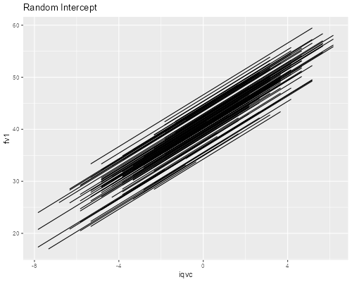

<h2 id="random-intercepts-and-slopes">Random Intercepts and Slopes</h2>
<p>We continue our analysis of the Snijders and Bosker data. This time
we will consider verbal IQ as a predictor of language scores. Here are
the data.</p>

{% include srtabs.html %}

<pre class='stata'>. use https://grodri.github.io/datasets/snijders, clear
(Scores in language test from Snijders and Bosker, 1999)
</pre>
<pre class='r'>> library(haven)
> snijders &lt;- read_dta("https://grodri.github.io/datasets/snijders.dta")
</pre>
<p>To simplify interpretation we will center verbal IQ on the overall
mean. <span class="stata">We also compute the number of observations per
school and flag the first, as we did before.</span></p>
<pre class='stata'>. sum iq_verb

    Variable │        Obs        Mean    Std. dev.       Min        Max
─────────────┼─────────────────────────────────────────────────────────
     iq_verb │      2,287    11.83406     2.06889          4         18

. gen iqvc = iq_verb - r(mean)

. egen sn = count(langpost), by(schoolnr)

. bysort schoolnr : gen first=_n==1
</pre>
<pre class='r'>> library(dplyr)
> snijders &lt;- mutate(snijders, iqvc = iq_verb - mean(iq_verb))
</pre>
<h3 id="school-regressions">School Regressions</h3>
<p>Our first step will be to run a separate regression for each school,
saving the intercept and slope. <span class="stata">This is easy to do
with <code>statsby</code>, creating variables <code>sa</code> and
<code>sb</code> in a new Stata dataset called “ols”, which we then merge
with the current dataset. The final step is to plot the school-specific
regression lines</span> <span class="r">To do this we take advantage of
<code>dplyr</code>’s <code>do()</code> to fit the models, extract the
coefficients, join them with the data, and plot the lines.</span></p>
<pre class='stata'>. statsby sa=_b[_cons] sb=_b[iqvc], by(schoolnr) saving(ols, replace) ///
>   : regress langpost iqvc
(running regress on estimation sample)

      Command: regress langpost iqvc
           sa: _b[_cons]
           sb: _b[iqvc]
           By: schoolnr

Statsby groups
────┼─── 1 ───┼─── 2 ───┼─── 3 ───┼─── 4 ───┼─── 5 
..................................................    50
..................................................   100
...............................

. sort schoolnr

. merge m:1 schoolnr using ols

    Result                      Number of obs
    ─────────────────────────────────────────
    Not matched                             0
    Matched                             2,287  (_merge==3)
    ─────────────────────────────────────────

. drop _merge

. gen yhat = sa + sb * iqvc

. sort schoolnr iqvc

. line yhat iqvc, connect(ascending) title(School Regressions)

. graph export fig1lang2.png, width(500) replace 
file fig1lang2.png saved as PNG format
</pre>
<p></p>
<pre class='r'>> library(ggplot2)
> fits &lt;- group_by(snijders, schoolnr) |> 
+   do( lf = lm(langpost ~ iqvc, data = .) )
> ols &lt;- data.frame(id = fits[[1]], t(sapply(fits[[2]],coef)))
> names(ols) &lt;- c("schoolnr", "sa", "sb")
> snijders &lt;- left_join(snijders, ols, by = "schoolnr") |> 
+   mutate(fv = sa + sb * iqvc)        
> ggplot(snijders, aes(iqvc, fv, group= schoolnr)) + geom_line() + 
+   ggtitle("School Regressions")
> ggsave("fig1lang2r.png", width = 500/72, height = 400/72, dpi = 72)
</pre>
<p></p>
<p>We will compare these lines with the Bayesian estimates based on
random intercept and random slope models.</p>
<h3 id="random-intercepts">Random Intercepts</h3>
<p>We now consider a model where each school has its onw intercept, but
these are drawn from a normal distribution with mean α and standard
deviation σ<sub>a</sub>. <span class="stata">We will use
<code>xtmixed</code> instead of <code>xtreg</code> so we can get
BLUPS.</span></p>
<pre class='stata'>. xtmixed langpost iqvc || schoolnr: , mle

Performing EM optimization: 

Performing gradient-based optimization: 

Iteration 0:   log likelihood = -7625.8865  
Iteration 1:   log likelihood = -7625.8865  

Computing standard errors:

Mixed-effects ML regression                     Number of obs     =      2,287
Group variable: schoolnr                        Number of groups  =        131
                                                Obs per group:
                                                              min =          4
                                                              avg =       17.5
                                                              max =         35
                                                Wald chi2(1)      =    1261.42
Log likelihood = -7625.8865                     Prob > chi2       =     0.0000

─────────────┬────────────────────────────────────────────────────────────────
    langpost │ Coefficient  Std. err.      z    P>|z|     [95% conf. interval]
─────────────┼────────────────────────────────────────────────────────────────
        iqvc │   2.488094   .0700548    35.52   0.000     2.350789    2.625399
       _cons │   40.60937   .3068552   132.34   0.000     40.00794    41.21079
─────────────┴────────────────────────────────────────────────────────────────

─────────────────────────────┬────────────────────────────────────────────────
  Random-effects parameters  │   Estimate   Std. err.     [95% conf. interval]
─────────────────────────────┼────────────────────────────────────────────────
schoolnr: Identity           │
                   sd(_cons) │    3.08172   .2552305      2.619968    3.624853
─────────────────────────────┼────────────────────────────────────────────────
                sd(Residual) │   6.498244   .0991428      6.306804    6.695494
─────────────────────────────┴────────────────────────────────────────────────
LR test vs. linear model: chibar2(01) = 225.92        Prob >= chibar2 = 0.0000
</pre>
<pre class='r'>> library(lme4)
> ri &lt;- lmer(langpost ~ iqvc + (1 | schoolnr), data = snijders, REML = FALSE)
> ri
Linear mixed model fit by maximum likelihood  ['lmerMod']
Formula: langpost ~ iqvc + (1 | schoolnr)
   Data: snijders
      AIC       BIC    logLik  deviance  df.resid 
15259.773 15282.713 -7625.886 15251.773      2283 
Random effects:
 Groups   Name        Std.Dev.
 schoolnr (Intercept) 3.082   
 Residual             6.498   
Number of obs: 2287, groups:  schoolnr, 131
Fixed Effects:
(Intercept)         iqvc  
     40.609        2.488  
</pre>
<p>The expected language score for a kid with average verbal IQ averages
40.6 across all schools, but shows substantial variation from one school
to another, with a standard deviation of 3.1. The common slope is
estimated as a gain of 2.49 points in language score per point of verbal
IQ. (The standard deviation of verbal IQ is 2.07, so one standard
deviation of verbal IQ is associated with 5.15 points in language score.
This gives us a good idea of the relative importance of observed and
unobserved effects.)</p>
<p>Next we compute fitted lines and estimate the random effects. As a
check we verify that we can reproduce the fitted values “by hand” using
the fixed and random coefficients.</p>
<pre class='stata'>. predict yhat1, fitted // y-hat for model 1

. predict ra1, reffects // residual intercept for model 1

. gen check = (_b[_cons] + ra1) + _b[iqvc]*iqvc 

. list yhat1 check in 1/5

     ┌─────────────────────┐
     │    yhat1      check │
     ├─────────────────────┤
  1. │ 20.74202   20.74202 │
  2. │ 24.47416   24.47416 │
  3. │ 26.96226   26.96226 │
  4. │  30.6944    30.6944 │
  5. │  33.1825    33.1825 │
     └─────────────────────┘
</pre>
<pre class='r'>> snijders &lt;- mutate(snijders, fv1 = predict(ri))
> b &lt;- fixef(ri)
> re &lt;- ranef(ri)$schoolnr[,1]
> check &lt;- b[1] + re[snijders$schoolnr] + b[2] * snijders$iqvc
> cbind(snijders$fv1[1:5], check[1:5])
      [,1]     [,2]
1 48.11106 48.11106
2 46.86701 46.86701
3 34.42654 34.42654
4 38.15868 38.15868
5 30.69440 30.69440
</pre>
<p>Next we plot the fitted regression lines and the two estimates of the
school intercepts</p>
<pre class='stata'>. line yhat1 iqvc, connect(ascending) title(Random Intercept)

. graph export fig2lang2.png, width(500) replace
file fig2lang2.png saved as PNG format

. gen sa1 = _b[_cons] + ra1 // school intercept based no model 1

. twoway (scatter sa1 sa ) (function y=x, range(30 48)) ///
> , legend(off) ytitle(BLUP) xtitle(ML) title(School Intercepts)

. graph export fig3lang2.png, width(500) replace
file fig3lang2.png saved as PNG format

. list schoolnr sn if sa &lt; 30 &amp; first

      ┌───────────────┐
      │ schoolnr   sn │
      ├───────────────┤
  32. │        2    7 │
 337. │       47    8 │
 841. │      103    4 │
2282. │      258    7 │
      └───────────────┘
</pre>
<p></p>
<pre class='r'>> ggplot(snijders, aes(iqvc, fv1, group = factor(schoolnr))) + geom_line() +
+   ggtitle("Random Intercept")
> ggsave("fig2lang2r.png", width = 500/72, height = 400/72, dpi = 72)
> ols &lt;- mutate(ols, sab = b[1] + re)
> ggplot(ols, aes(sa, sab)) + geom_point() + 
+   geom_abline(intercept=0, slope=1) + ggtitle("School Intercepts")
> ggsave("fig3lang2r.png", width = 500/72, height = 400/72, dpi = 72)
</pre>
<p></p>
<p>We see that all the lines are parallel as one would expect.</p>
<p></p>
<p></p>
<p>We also note that the intercepts have shrunk, particularly for the
four small schools with very low language scores.</p>
<h3 id="random-slopes">Random Slopes</h3>
<p>Our next model treats the intercept and slope as observations from a
bivariate normal distribution with mean <em>α,β</em> and
variance-covariance matrix with elements
<em>σ<sup>2</sup><sub>a</sub></em>, <em>σ<sup>2</sup><sub>b</sub></em>,
and <em>σ<sub>ab</sub></em>. <span class="stata">In Stata you must
specify <code>covariance(unstructured)</code>.</span></p>
<pre class='stata'>. xtmixed langpost iqvc || schoolnr: iqvc, mle covariance(unstructured)

Performing EM optimization: 

Performing gradient-based optimization: 

Iteration 0:   log likelihood = -7615.9951  
Iteration 1:   log likelihood = -7615.3896  
Iteration 2:   log likelihood = -7615.3887  
Iteration 3:   log likelihood = -7615.3887  

Computing standard errors:

Mixed-effects ML regression                     Number of obs     =      2,287
Group variable: schoolnr                        Number of groups  =        131
                                                Obs per group:
                                                              min =          4
                                                              avg =       17.5
                                                              max =         35
                                                Wald chi2(1)      =     962.02
Log likelihood = -7615.3887                     Prob > chi2       =     0.0000

─────────────┬────────────────────────────────────────────────────────────────
    langpost │ Coefficient  Std. err.      z    P>|z|     [95% conf. interval]
─────────────┼────────────────────────────────────────────────────────────────
        iqvc │   2.526371   .0814526    31.02   0.000     2.366727    2.686015
       _cons │   40.70956   .3042429   133.81   0.000     40.11325    41.30586
─────────────┴────────────────────────────────────────────────────────────────

─────────────────────────────┬────────────────────────────────────────────────
  Random-effects parameters  │   Estimate   Std. err.     [95% conf. interval]
─────────────────────────────┼────────────────────────────────────────────────
schoolnr: Unstructured       │
                    sd(iqvc) │   .4583786   .1100923      .2862759    .7339457
                   sd(_cons) │   3.058361   .2491362      2.607049      3.5878
            corr(iqvc,_cons) │  -.8168454   .1743483     -.9744734   -.1197812
─────────────────────────────┼────────────────────────────────────────────────
                sd(Residual) │   6.440508   .1004239      6.246657    6.640373
─────────────────────────────┴────────────────────────────────────────────────
LR test vs. linear model: chi2(3) = 246.91                Prob > chi2 = 0.0000

Note: LR test is conservative and provided only for reference.
</pre>
<pre class='r'>> rs &lt;- lmer(langpost ~ iqvc + (iqvc | schoolnr), data=snijders, REML=FALSE)
> rs
Linear mixed model fit by maximum likelihood  ['lmerMod']
Formula: langpost ~ iqvc + (iqvc | schoolnr)
   Data: snijders
      AIC       BIC    logLik  deviance  df.resid 
15242.777 15277.187 -7615.389 15230.777      2281 
Random effects:
 Groups   Name        Std.Dev. Corr 
 schoolnr (Intercept) 3.0583        
          iqvc        0.4584   -0.82
 Residual             6.4405        
Number of obs: 2287, groups:  schoolnr, 131
Fixed Effects:
(Intercept)         iqvc  
     40.710        2.526  
</pre>
<p>The expected language score for a child with average IQ now averages
40.7 across schools, with a standard deviation of 3.1. The expected gain
in language score per point of IQ averages 2.5, almost the same as
before, with a standard deviation of 0.46. The intercept and slope have
a negative correlation of -0.82 across schools, so schools with higher
language scores for a kid with average verbal IQ tend to show smaller
average gains.</p>
<p>The next step is to predict fitted values as well as the random
effects. We verify that we can reproduce the fitted values “by hand” and
the plot the fitted lines</p>
<pre class='stata'>. predict yhat2, fitted           // yhat for model 2

. predict rb2 ra2, reffects       //residual  slope and intercept for model 2

. capture drop check

. gen check = (_b[_cons] + ra2) + (_b[iqvc] + rb2)*iqvc

. list yhat2 check in 1/5

     ┌─────────────────────┐
     │    yhat2      check │
     ├─────────────────────┤
  1. │ 20.78046   20.78046 │
  2. │ 24.53936   24.53936 │
  3. │ 27.04529   27.04529 │
  4. │ 30.80419   30.80419 │
  5. │ 33.31012   33.31012 │
     └─────────────────────┘

. line yhat2 iqvc, connect(ascending)

. graph export fig4lang2.png, width(500) replace
file fig4lang2.png saved as PNG format
</pre>
<p></p>
<pre class='r'>> snijders &lt;- mutate(snijders, fv2 = predict(rs))
> re &lt;- ranef(rs)$schoolnr
> b &lt;- fixef(rs)
> map &lt;- snijders$schoolnr
> check &lt;- (b[1] + re[map, 1]) + (b[2] + re[map ,2]) * snijders$iqvc
> cbind(snijders$fv2[1:5], check[1:5])
      [,1]     [,2]
1 48.34573 48.34573
2 47.09276 47.09276
3 34.56309 34.56309
4 38.32199 38.32199
5 30.80419 30.80419
> ggplot(snijders, aes(iqvc, fv2, group=schoolnr)) + geom_line() +
+   ggtitle("Random Slopes")
> ggsave("fig4lang2r.png", width = 500/72, height = 400/72, dpi = 72)
</pre>
<p></p>
<p>The graph of fitted lines shows clearly how school differences are
more pronounced at lower than at higher verbal IQs.</p>
<p>Next we compare the latest Bayesian estimates with the within-school
regressions to note the shrinking typical of Bayes methods</p>
<pre class='stata'>. gen sa2 = _b[_cons] + ra2

. gen sb2 = _b[iqvc]  + rb2

. twoway scatter sa2 sa , title(Intercepts) name(a, replace)

. scatter sb2 sb, title(Slopes) name(b, replace)

. graph combine a b, title(Bayesian and Within-School Estimates) ///
>   xsize(6) ysize(3)

. graph export fig5lang2.png, width(720) replace
file fig5lang2.png saved as PNG format
</pre>
<p></p>
<pre class='r'>> library(gridExtra)
> ols &lt;- mutate(ols, sa2 = b[1] + re[,1], sb2 = b[2] + re[,2])
> g1 &lt;- ggplot(ols, aes(sa, sa2)) + geom_point() + ggtitle("Intercepts")
> g2 &lt;- ggplot(ols, aes(sb, sb2)) + geom_point() + ggtitle("Slopes")
> g &lt;- arrangeGrob(g1, g2, ncol=2)
> ggsave("fig5lang2r.png", width = 10, height = 5, dpi = 72)
</pre>
<p></p>
<p>We can also check how much individual schools are affected. Try
school 40 for little change, or schools 2, 47, 103 or 258 for
substantial change. Here is a plot of school 2:</p>
<pre class='stata'>. gen use = schoolnr==2

. twoway  (scatter langpost iqvc if use) ///      scatterplot
>   (line yhat  iqvc if use, lpat(dot)) ///         within school
>   (line yhat2 iqvc if use, lpat(dash)) ///                mixed model
>   ( function y=_b[_cons] + _b[iqvc]*x, range(-5 1) ) , /// average
>   legend(order(2 "within" 3 "EB" 4 "Avg") cols(1) ring(0) pos(5))

. graph export fig6lang2.png, width(500) replace
file fig6lang2.png saved as PNG format
</pre>
<p></p>
<pre class='r'>> school2 &lt;- filter(snijders, schoolnr ==2) |>
+   mutate(avg = b[1] + b[2] * iqvc)
> ggplot(school2, aes(iqvc, langpost)) + geom_point() +
+   geom_line(aes(iqvc, fv,  color="Within")) + 
+   geom_line(aes(iqvc, fv2, color="EB")) +
+   geom_line(aes(iqvc, avg, color="Average")) +
+   guides(color=guide_legend(title="Line"))
> ggsave("fig6lang2r.png", width = 500/72, height = 400/72, dpi = 72)
</pre>
<p></p>
<p>The next step will be to consider a contextual or school-level
predictor.</p>
